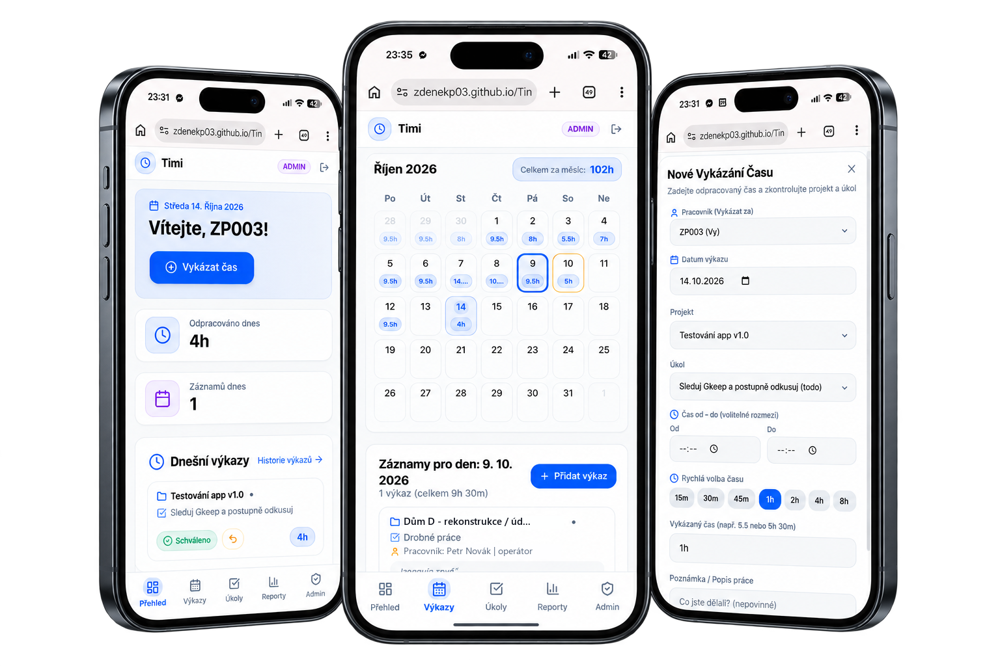
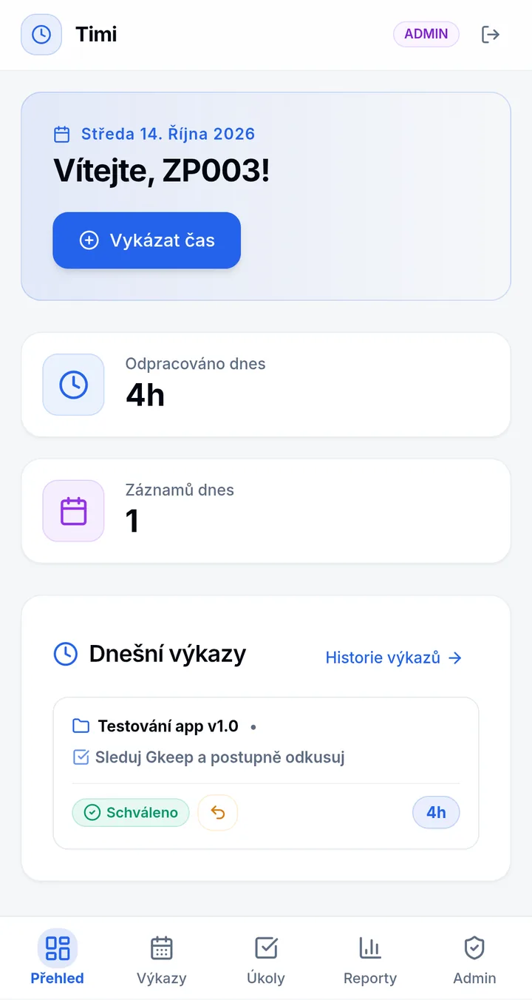
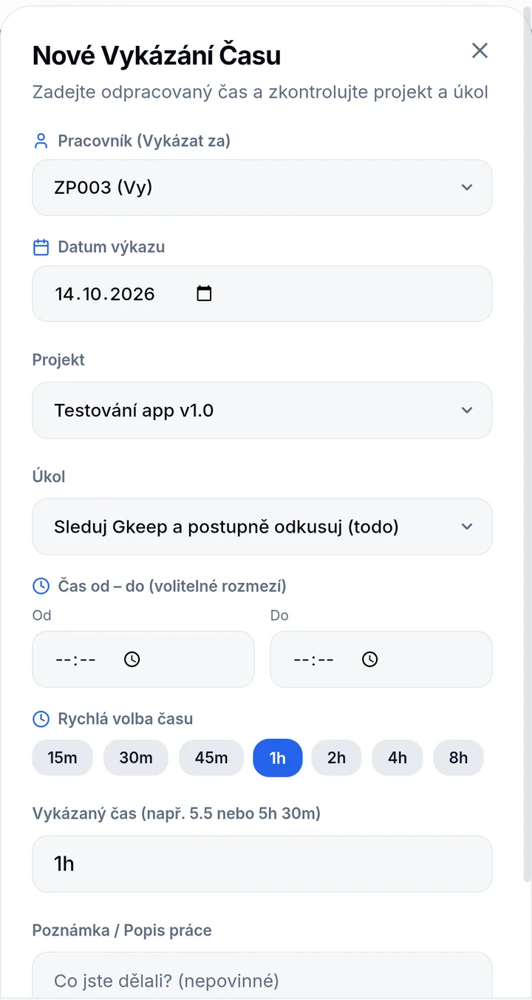
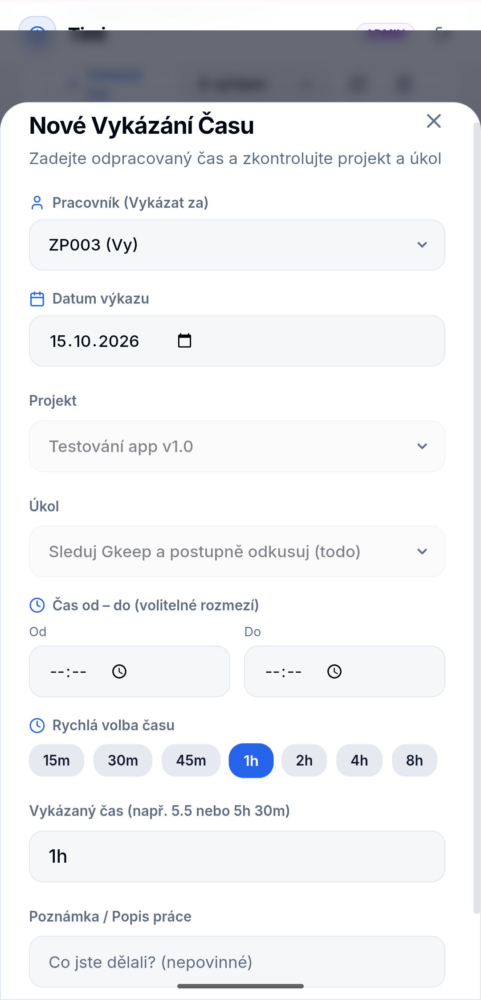
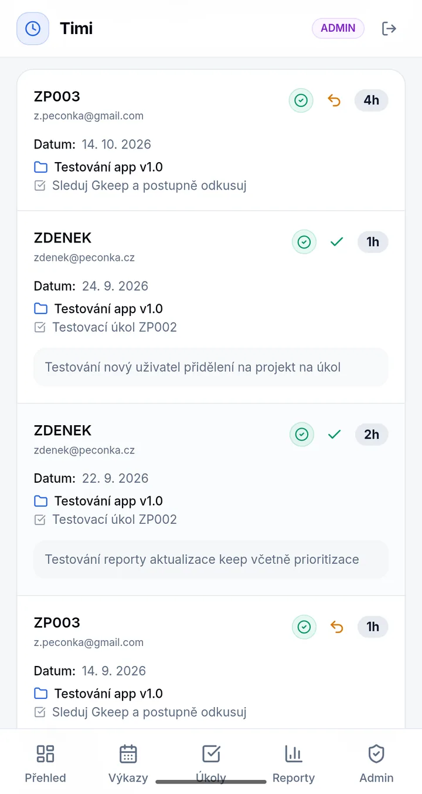
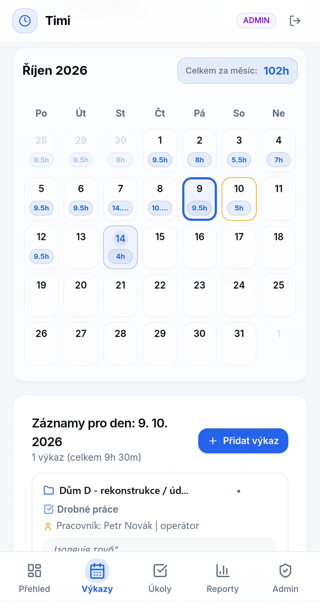
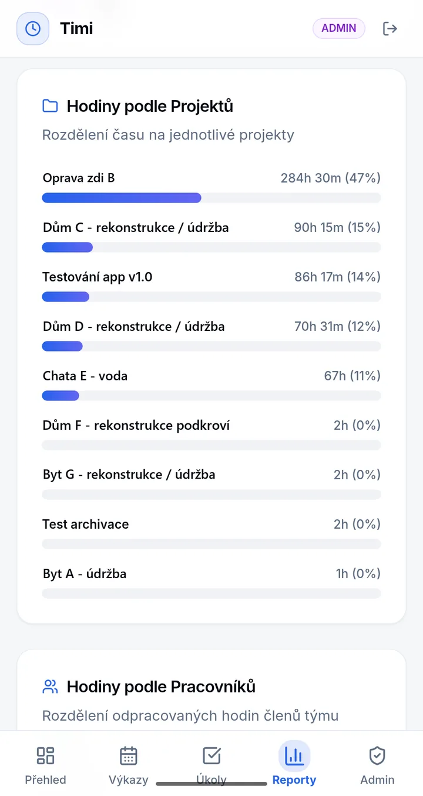
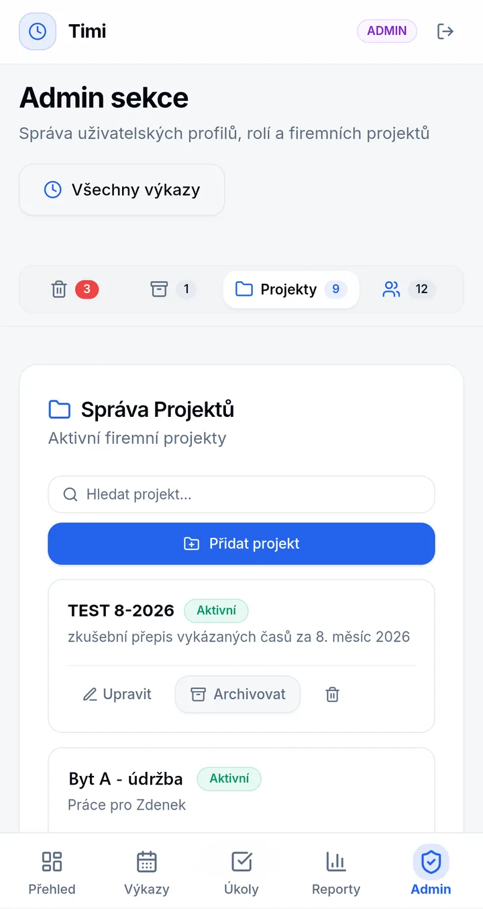
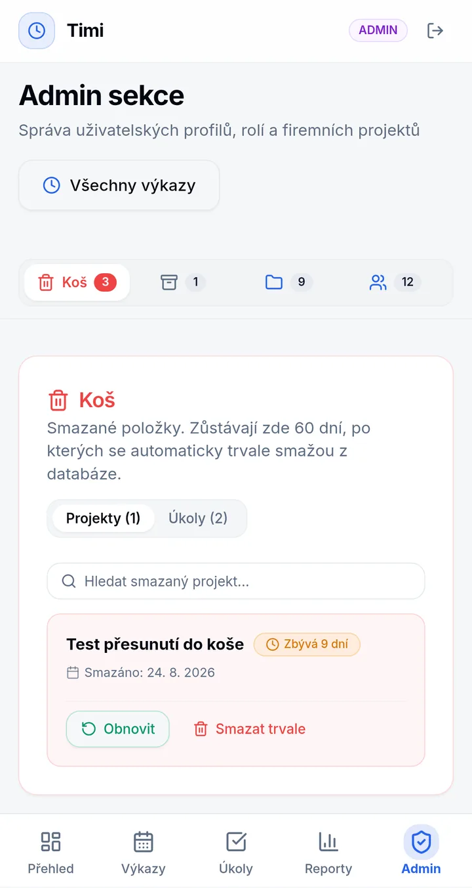

Timi
A lightweight timesheet & task app I designed and vibe-coded from scratch to replace chaotic manual tracking for on-site workers who don't read Czech, aren't fluent in the Latin alphabet, and aren't tech-savvy.

At a glance
| Role | Product / UX design, solution architecture, delivery & maintenance (solo, AI-assisted build) |
|---|---|
| Background | UX Research & Design (Ing.) + 1 year as a low-code FE developer — comfortable with HTML/CSS and basic JS, thinks through data and permissions, verifies by testing |
| Context | Internal tool for a small project-based team, no dev team |
| Stack | React + Vite + TypeScript, Tailwind + shadcn/ui, Supabase (PostgreSQL + Auth) |
| Status | In internal use |
TL;DR: Team leads tracked everyone's hours manually — error-prone, no history, monthly pain. Excel couldn't handle hierarchical categorization or mobile entry. I tested 8+ existing tools and none fit (too complex, not mobile-friendly, no Ukrainian, paywalled time tracking). So I designed and built Timi: log work in 2–3 taps, directly from a task card, with daily/weekly/monthly control and a lightweight approval flow for leads.
1. The problem
A small team doing project-based manual work. The lead organized the work and kept all records manually.
What that meant in practice:
- Hours were written down and summed by hand at the end of the month
- Missing descriptions and categorization → impossible to say how much time went to which activity
- Manual sums → errors → tension in the team
- Long-term unsustainable
Design challenge: How to let people — including Cyrillic-script readers who don't speak Czech, and workers with low digital literacy — log categorized work from a phone, on-site, in seconds, with near-zero training, at near-zero cost?
Constraints I designed for
- Low cost — free / student tiers only
- Language & accessibility — usable without reading Czech, without over-engineering (see the localization decision in section 3), minimal controls
- Mobile reality — logging happens on-site, from a phone
- Complex relations, simple surface — projects, tasks, time entries, people, but the UI must hide that complexity
2. Discovery: why not Excel, why not an existing app?
Idea 1: Excel / Google Sheet
My first instinct. I rejected it because:
- No clean way to do hierarchical categorization (project → task → entry)
- Unusable from a mobile phone for quick on-site logging
Idea 2: Use an existing app
This was the most painful week of the whole project. Creating test accounts, setting them up, comparing — I had to keep a sheet just to stop going in circles.
Pattern: either too complex / not mobile-friendly, or too expensive, or no Czech / Ukrainian language support.
So: custom app it is. Goal — something extremely simple that beats a spreadsheet where it matters.
3. The solution: Timi
Timi is an internal web app for fast, clear timesheet reporting, approvals, and task management.
Screenshots show the Czech UI — the team's working language. Tap any screen to open it full size.
Core principles:
- Log work where you are — dashboard quick-form + log directly from a task card, no context switching
- See if the day is OK at a glance — daily / weekly / monthly calendar views with visual check against the daily standard
- Trust but verify — lightweight approval workflow for leads, automatic invalidation on edit
- Forgiving — trash with restore + 60-day retention instead of hard deletes
Key UX decisions
- 2–3 tap logging (mobile-first) Dashboard quick form: pick project → task (pre-filtered to your assignments only) → tap 15m / 30m / 45m / 1h / 2h / 4h / 8h or type minutes → optional comment → save. No timer to manage, no mandatory fields that block field use.

Dashboard: one button to log, today's total at a glance 
Quick log with preset durations (lead view — regular users don't see worker & date) - Contextual logging from the task card The highlight interaction: you don't go to a separate Timesheet form. You tap a task, a dialog opens with project + task pre-selected. Just time + comment + save. This cut cognitive load and navigation to minimum.

Contextual time entry with project and task pre-selected - Only show what is yours Task assignment (
task_assignments) drives the whole UI — a normal user only ever sees their assigned tasks and their own entries. Leads/admins can switch between people. Less clutter = fewer mistakes. -
Calendar as audit, not decoration
- Daily: timeline + today's entries
- Weekly: 7-column grid with daily totals, color-coded against the daily fund
- Monthly: matrix with per-day sums
- Filters persist in the URL so a view can be shared / returned to.
-
Approval without admin overload
- Entries by a normal user start as pending_review
- Lead/admin approves in one click
- Entries created/edited by lead/admin are auto-approved
- If a user edits an approved entry, approval is automatically invalidated → back to pending_review
- Full audit log (who created, who approved, revision history) on each entry

Lead's list: approve or return in one tap 
Approved entry in the calendar — note the Ukrainian comment - Low barrier access — and a pragmatic call on localization Passwordless login (email + one-time code), minimal controls, translatable UI. No passwords to forget, no training needed.
On languages I deliberately chose browser translation over native Ukrainian/Russian UI: interface translation would not include the actual user-generated content (task names, time-entry comments) where understanding matters most — see the Ukrainian comment in the approved entry above. The Ukrainian colleagues already use browser translate confidently in daily work, and a full i18n setup with content translation would have significantly delayed delivery. Since manual notebook tracking was already unsustainable, shipping earlier had more value than shipping perfectly localized.
Making this actually work in React was a real issue to solve: browser translators mutate DOM text nodes behind React's back, which React then can't reconcile — and the app crashes. Honestly, I wasn't sure it was solvable, but it turned out to be a known problem with a standard fix. The agent added a guard that catches translator-induced crashes, and I verified the app stays stable with Google Translate / Edge auto-translate on. So Timi is explicitly translator-compatible — which isn't a given for React apps.
4. Product tour (short)
- Dashboard (
/) — today's total vs. standard, quick-log form, today's entries with edit/delete + approval badge - Tasks & Projects (
/tasks) — filter by project / status (To do / In progress / Done) / person; task dialog with contextual logging; leads/admins create tasks and assign people (multi-select) - Timesheet & Approvals (
/timesheet,/time-entries) — daily / weekly / monthly views, switch between workers (lead/admin), entry detail with audit log - Reports (
/reports) — periods (this/last week, month, quarter, custom), totals in hours & days, split by project and by person, approved-only filter, CSV export for Excel / Sheets / accounting - Admin (
/admin) — users & roles (user ↔ lead ↔ admin), activate/deactivate, projects, trash & restore, permanent delete, 60-day auto-cleanup



Roles in one sentence: users log only today on assigned tasks; leads log for others incl. history and approve; admins manage everything.
5. How I built it (vibe-coding with FE literacy)
I'm a UX graduate (Ing.) with a year of experience as a low-code FE developer. I'm not a React or backend developer — but I understand how a frontend works with data, and I can describe the behavior precisely enough for the AI to build the right thing. I check the result mainly by testing it: clicking through every role and scenario, including the edge cases.
- I did: product/UX design, information architecture, business rules, solution architecture, delivery and maintenance
- AI did: code generation under tight spec via Supabase + React mainstream stack
- Why this stack: Supabase (Backend-as-a-Service, SQL for complex relations, good AI tooling) + React + Vite (mainstream, AI-friendly, simpler than Next.js) + Tailwind + shadcn/ui components
What made it work was spec before code. Because I understand how a frontend consumes data, my requirements already anticipated backend needs — e.g. lists use infinite scroll (30 items per page), so hour summaries and report aggregations had to be computed on the backend, not summed on the client from downloaded pages. UX decisions drove architecture the same way: the assignment table exists so users only see relevant content; RLS rules in PostgreSQL enforce time windows and permissions so the frontend can't break them.
The hardest part: thinking it through, not drawing it
The screens were the easy part. What took the most thinking was working out how things should behave — and then how to make that work technically. Approvals are the best example.
From the client's side it looked trivial: "Just add an approved: true / false field." But a single flag can't answer the questions that come up right away:
- What happens when someone edits an entry after it was approved? Does the approval still count?
- If a lead logs an entry themselves, what's the point of making them approve it afterwards?
- Who approved it, when, and was it a manual or automatic approval? Invoicing needs that trail.
- How does a lead take an approval back?
So I designed approval as its own record — who approved, when, and how (manual / automatic on create / automatic on update) — instead of a flag. That raised the next question: how do you tell whether an entry is approved without loading every approval for every entry and checking them on the client?
The answer was one simple rule: an approval is valid only if it's newer than the entry's last edit. When a worker edits an entry, older approvals stop counting on their own — nothing has to be reset, and the history stays intact for the audit log. When a lead edits it, a database trigger adds a fresh automatic approval for the new version, but only if the actual work data changed.
The status is evaluated on the backend: a database view attaches it to every time entry as a regular field — approved / pending_review, plus who approved it last and whether the signed-in lead is one of the approvers. The frontend never loads or checks approval records; it just reads the entry.
Taking an approval back was a deliberate exception to "keep everything". Its purpose is to fix a misclick, and an approval given by mistake has no value in the audit trail — so it's deleted. That's why a lead can only remove their own, currently valid approval, enforced by row-level security in the database. If another lead has also approved that version, the entry stays approved.
What I'd watch next time
Shadcn components were generated in a shadcn-like style but without proper shadcn CLI init — I'd set up component tooling / skills for the agent explicitly from day one.
6. Impact & what I learned
Before → after:
- Manual sums with errors and missing categories → categorized entries with project/task/person/date/comment + approval state
- End-of-month detective work → weekly/monthly views + CSV for invoicing and controlling
- One person as bottleneck → users log for themselves in seconds, leads just approve
What I take away: the hardest part of a product isn't the screens, it's the rules behind them. A feature that looks like a checkbox in a meeting — like approvals — can hide most of the system's logic, and asking "what happens when…" early is what kept the data model simple.